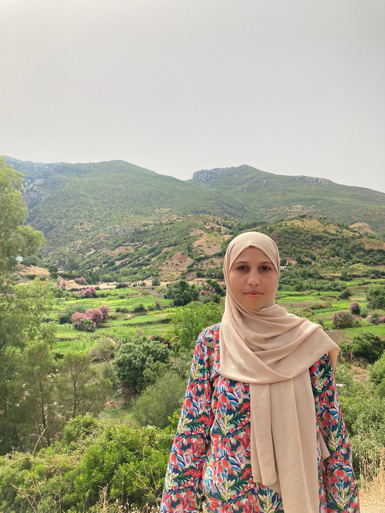

|

PROFIL
Personnelle
Nom: El idrissi wiam address: casablanca,dyar salam, emmeuble 407 Numero de telephone: 0702977092 email: karimarhihir407@gmail.com address: casablanca,dyar salam, emmeuble 407 Date de naissance: 02 fevrier 2007 |
Wiam El IdrssiEXPERIENCE PROFESSIONNELLE
|
|---|